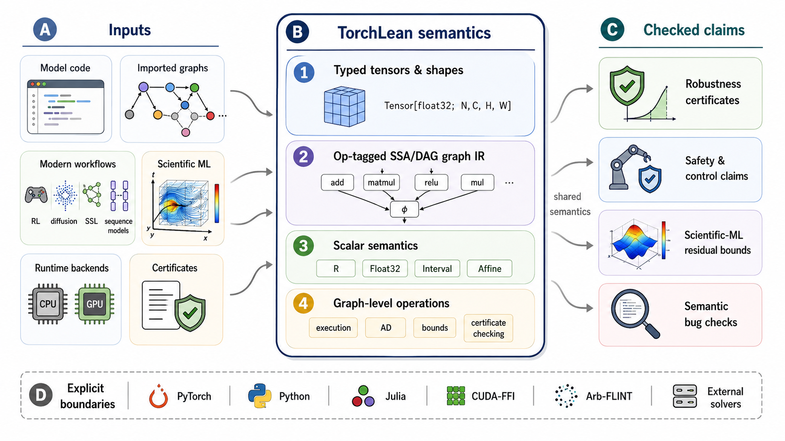

Presents TorchLean, a Lean 4 framework for formalizing, executing, and verifying neural networks with verified differentiation and bound propagation.
Abstract
Neural networks are increasingly deployed in scientific, safety critical, and mission critical pipelines, yet verification and analysis are often performed outside the programming environment that defines and runs the model. This creates a semantic gap between the executed network and the analyzed artifact: guarantees can depend on implicit conventions about operator semantics, tensor layouts, preprocessing, floating-point behavior, graph transformations, accelerated kernels, and external certificates. We present TorchLean, a unified framework for formalizing, executing, and verifying neural networks in Lean 4. TorchLean treats learned models as executable programs and mathematical objects with a shared semantics for computation, verification, and theorem proving. The framework provides a PyTorch style API for typed tensors, layers, objectives, optimizers, automatic differentiation, and graph programs, with eager and compiled execution paths that lower to a common computation-graph representation. TorchLean supports exact and finite-precision tensor semantics, verified reverse-mode differentiation, interval and affine bound propagation, CROWN/LiRPA style certificate checking, import/export workflows, and CUDA-backed execution through explicit FFI boundaries. It also includes semantic layers for attention and FlashAttention, state-space sequence models, diffusion and sampling processes, probability kernels, reinforcement-learning objectives and Markov decision processes, and self-supervised objectives such as masked autoencoding, JEPA-style predictive views, and variance/correlation-based anti-collapse losses. Together, these components provide a semantic foundation for verified machine learning, where executable neural network artifacts, verification procedures, runtime boundaries, and mathematical claims can be stated and related inside one theorem-proving environment.
Problem
Neural networks are deployed in safety-critical pipelines, yet verification and analysis are performed outside the programming environment that defines and runs the model. This semantic gap means guarantees can depend on implicit conventions about operator semantics, tensor layouts, and floating-point behavior.
Approach
TorchLean is a framework that formalizes neural networks in Lean 4, providing a PyTorch-style API where models are written as executable neural network programs. Models are lowered to a shared operator-tagged SSA/DAG intermediate representation and interpreted by execution, automatic differentiation, bound propagation, and certificate checking through the same formal semantics. The framework supports typed tensors, verified graph-level differentiation, explicit floating-point semantics, and native IBP/CROWN-style verification.

Figure 1: TorchLean provides a shared semantic layer for verified machine learning. Model code, imported graphs, modern ML workflows, scientific ML artifacts, and certificates are funneled into a common typed tensor and operator-tagged SSA/DAG graph semantics in Lean. Execution, automatic differentiation, bound propagation, and certificate checking are all performed against this shared representat
Results
TorchLean supports modern ML workflows including convolutional networks, residual blocks, and transformer attention. It successfully performs certified robustness verification, neural-controller verification, and scientific ML residual checking within a single formal system. The framework can import VNN-COMP style artifacts and check certificates against one mathematical denotation.